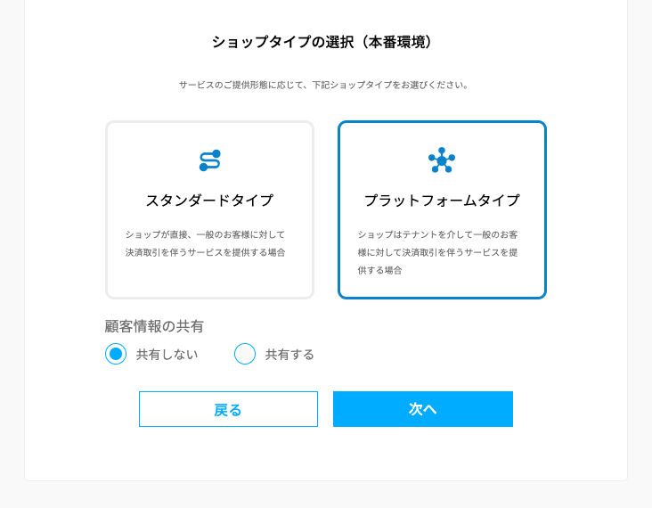
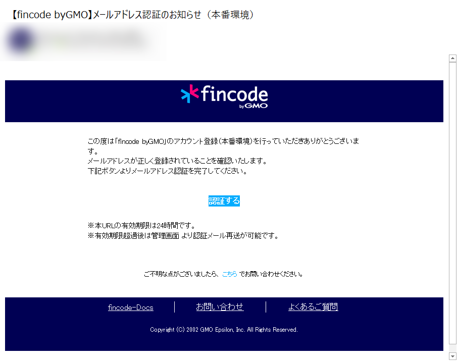
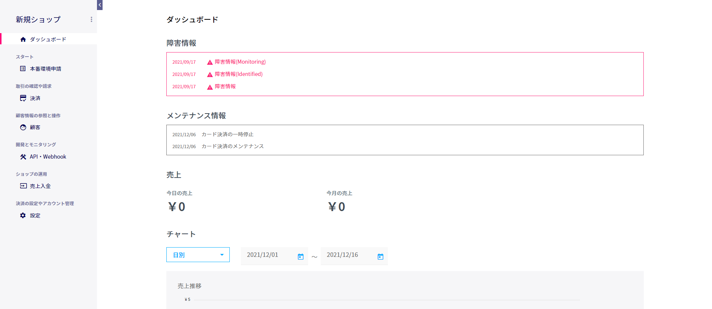

在生产环境注册新用户（生产环境申请）
在生产环境注册新用户
和测试环境一样，生产环境也须注册新用户。即使已在测试环境注册，仍须在生产环境重新注册。

打开控制面板的新用户注册页面后，输入姓名、电子邮件地址和密码，点击［注册新用户］。
页面显示［双因素认证－设置认证应用］后，请使用 Google Authenticator、Microsoft Authenticator 等认证应用扫描二维码，或输入认证码。
双因素认证设置步骤
登录控制面板需要通过双因素认证和邮件验证。
选择商户类型
请选择商户类型。
- 标准类型：适用于普通商户运营。
- 平台类型：适用于在 fincode 商户之间建立上下级关系，并以所有者身份管理商户的业务。
详情请参阅 平台。

您在新用户注册时填写的电子邮件地址会收到 fincode（noreply@fincode.jp）发来的用户注册确认邮件。
邮件验证
点击邮件正文中的 URL，在打开的页面输入注册新用户时设置的密码，即可完成邮件验证。

完成双因素认证设置和邮件验证后，即可登录管理后台。

生产环境申请
从控制面板的侧栏菜单选择［生产环境申请］。
填写各页显示的项目，提交生产环境申请。
生产环境申请最快可在 4 个工作日内审核完成。审核完成后会收到通知邮件。
控制面板的侧栏菜单也将不再显示［生产环境申请］。
审核完成后，即可在生产环境使用 fincode API。
| 项目 | 所需文件 |
|---|---|
| 按商户经营的商品或服务所需提交的文件 | • 二手商品经营许可证 • 酒类通信销售零售许可证 • 化妆品生产许可证及化妆品生产销售许可证 • 高度管理医疗器械销售许可证等 |
| 没有电商网站时所需文件 | • 样品图片 |
| 使用应用时 | • 应用界面图片（首页、图标） |